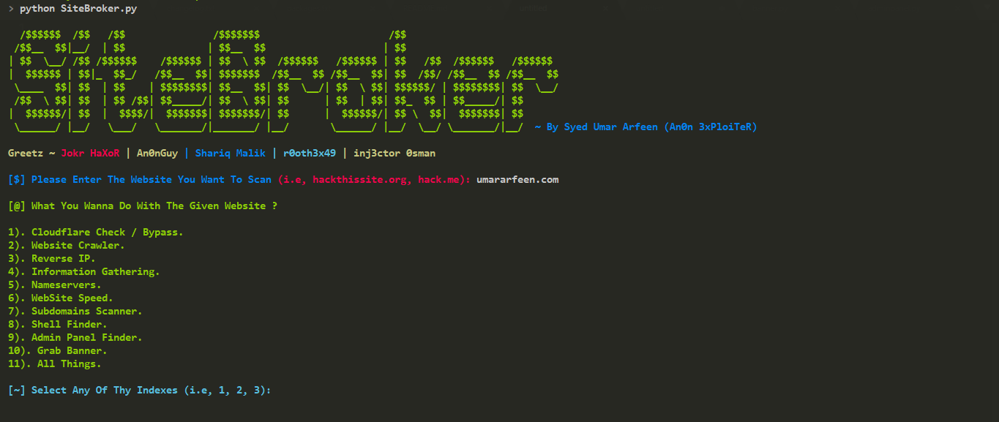
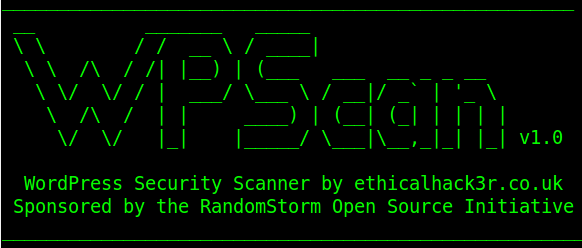
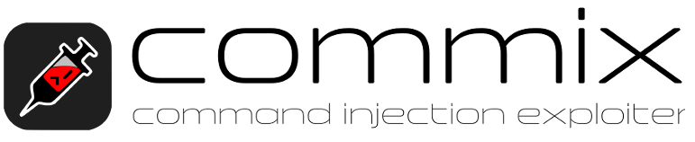

AL13N CH405
Hackers | Coders | Server Admins
Unique Visitors!
SiteBroker

Python Hack Tool
A cross-platform python based utility for information gathering and penetration automation!
Discover Tool!
WPScan!

Ruby Hack Tool
WPScan is a free, for non-commercial use, black box WordPress vulnerability scanner used with Ruby!
Discover Tool!
Commix!

Python Hack Tool
Commix is an automated toolto test web-based applications and easily find and exploit a command injection vulnerabilities!
Discover Tool!
SiteBroker!
A cross-platform python based utility for information gathering and penetration automation!Requirements:
Installation:Step 1: Step 2: Step 3: Step 4:
SiteBroker!
WPScan!
A Ruby based utility for exploiting & inflitrtating WordPress Websites!Prerequisites:
Installation:Step 1: Step 2: Step 3: Step 4:
WPScan!
Commix!
A Python Based utility used in order to discover vulnerabilities inside of web applications!Prerequisites:
Installation:Step 1: Step 2: Step 3:
Commix!